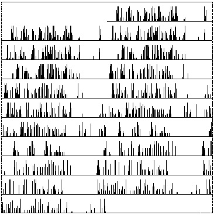
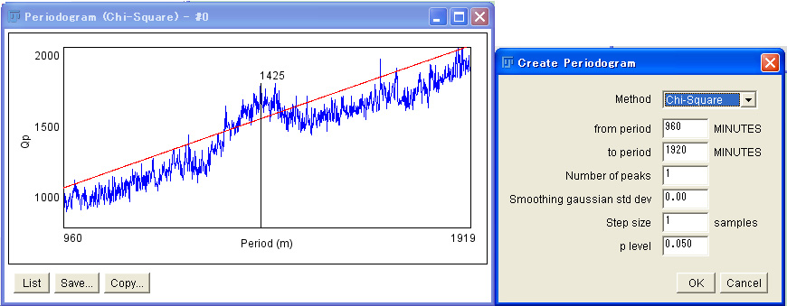
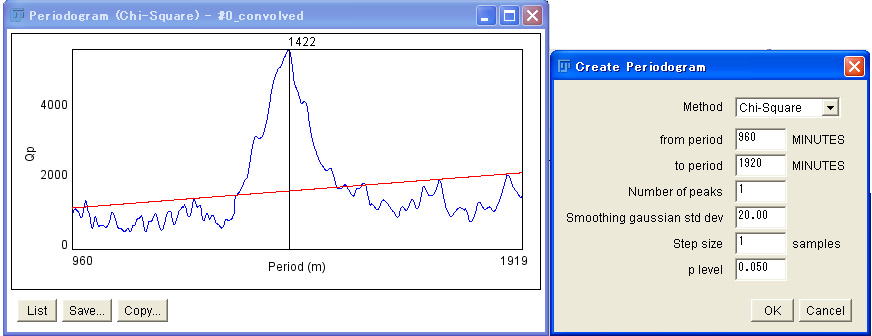
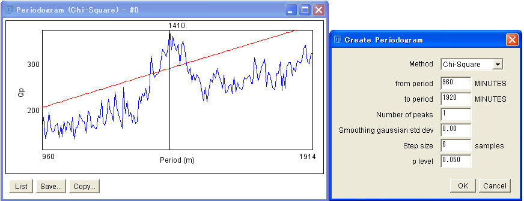

Before you apply chi-sqare periodogram to a high resolution time serise data, we would like to show you the effects of smoothing functions the in analysis.
As an example, we analyze a free-running rhythm of a fly activity in constant darkness. The data were collected with 1 min-bins.

If we apply chi-sqare periodogram to this data without any smoothing, the periodogram displays a peak at 1425 min above a significant line (red line) with many small and sharp peaks over the graph.

This significant peak can be pronounced by smoothing the data, by which the noise peaks are diminished. In the next periodogram, we smoothed the data by a Gaussian kernel. As you see, the significant peak is now very high.

A similar effect can be achieved by changing the step size. Here we tranform 1 min data to 6 min data. A problem is that the resolution of the periodogram is also reduced, because the resolution of the chi-sqare periodogram analysis depends on the resolution of the data.

If you compare all periodograms, you will see that smoothing influences the power of the peak very much.